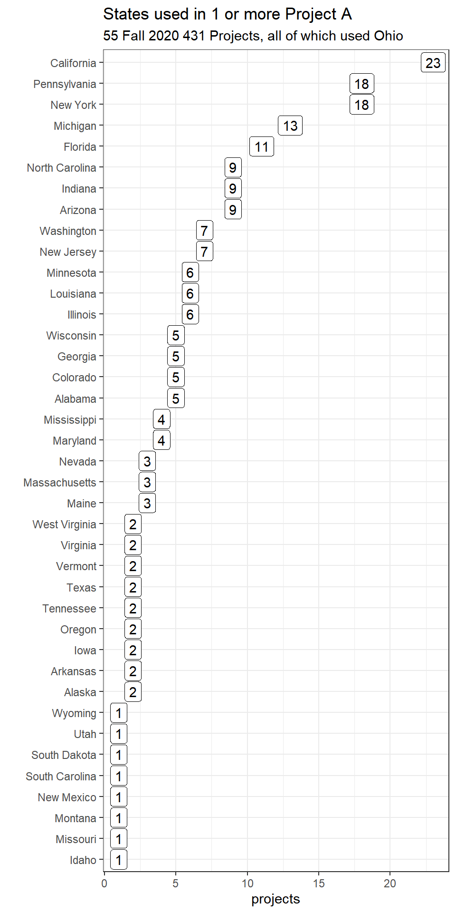

Project A Summary based on the Proposals
This page was last updated: 2020-10-14 14:22:59.
States Selected
We have 55 projects.
- 26 projects use four states, 18 use 5 states, and 11 use 6 states.
- In total, we have 260 “states” in use.
- The states which we “permitted” you to use that no one chose were:
- Kansas (104 counties), Kentucky (120), North Dakota (48), Nebraska (80) and Oklahoma (77).
- States (and DC) you were not permitted to use (because they have < 12 counties) were:
- Connecticut (8 counties), Delaware (3), Hawaii (4), New Hampshire (10), Rhode Island (5) and Washington DC (1).
- Identical states were chosen by two different groups in two cases…
- Two projects use Ohio, Indiana, Michigan and Pennsylvania (330 counties, 4 states)
- Two projects use Ohio, Illinois, Indiana and Michigan (365 counties, 4 states)
Here’s a graph of the states used at least once, excluding Ohio, which was used in all 55 projects:

Variables Selected
No two projects selected the same five variables.
Most Common Selections
Teams selected 56 of the 107 possible variables.
- The most common variable selected was
v063(Median household income), selected in 23 of the 55 projects, but only once as an outcome. v023(Unemployment) is used in 14 projects (but never as the outcome)v009(Adult smoking) is used in 13 (only 2 times as the outcome)v147(Life expectancy) is also used in 13 (12 times as the outcome)v042(Poor mental health days) is used in 12 (6 times as the outcome)v085(Uninsured) is used in 10 (once as the outcome)- Other common choices included:
v011(Adult obesity),v139(Food insecurity),v143(Insufficient sleep) andv145(Frequent mental distress) were each used in 9 projects,v021(High school graduation),v044(Income inequality),v049(Excessive drinking) andv070(Physical inactivity) were each used in 8 projects,v001(Premature death),v062(Mental health providers) andv069(Some college) were each used in 7v037(Low birthweight),v161(Suicides) were each used in 6v002(Poor or fair health),v014(Teen births), andv043(Violent crime) were each used in 5 projects
Outcome
- 12 of 55 projects selected
v147(Life expectancy) as their outcome - 6 more selected
v001(Premature death), and 6 also selectedv042(Poor mental health days) - 5 selected
v161(Suicides) - 4 selected
v037(Low birthweight) - 3 selected
v127(Premature age-adjusted mortality) - 2 selected
v002(Poor or fair health),v009(Adult smoking),v043(Violent crime), andv060(Diabetes prevalence) - while the other 11 projects used something no one else did.
Most Common Quantitative Predictors
- 10 projects used
v063(Median household income) - 7 projects used
v049(Excessive drinking) - 6 projects used
v085(Uninsured) and 6 usedv145(Frequent mental distress) - 5 projects used
v009(Adult smoking),v021(High school graduation),v023(Unemployment),v139(Food insecurity) andv143(Insufficient sleep)
Most Common Binary Predictors
- 7 of 55 projects selected
v023(Unemployment) to use for a binary categorical predictor - 5 used
v063(Median household income) - 4 used
v009(Adult smoking) and 4 usedv011(Adult obesity)
Most Common Multi-Categorical Predictors
36 projects split into 3 categories, 10 into 4 and just 9 into 5.
- 7 of 55 projects chose
v063(Median household income) - 3 used
v043(Violent crime),v069(Some college),v139(Food insecurity) and 3 usedv145(Frequent mental distress)
Titles of Your 55 Projects
My favorite title at the moment of these 55 is bolded. Tomorrow, I’ll probably like one of the other ones better.
If you’re considering a revision to your title, especially after you’ve completed the analyses and have something more substantial to say, I encourage you to think about whether you need words that appear many times in the other titles here, or whether there’s a more effective way to entice your audience and stand out.
- A Look into Ohio, Louisiana, Florida, and Vermont
- An Exploration of the County Heath Rankings Data
- Analysis of Adverse Mental Health Outcomes as a Reflection of Access to Mental Health Providers
- Analysis of County-Level Health Indicators in Five US States
- Analysis Of Math Test Scores in the U.S.
- Analyzing the Factors for Premature Death
- Assessing Poor Mental Health Days
- Assessment and Comparing Suicidal Risk Factors in Ohio and Three Other States
- Association of Air pollution with Poor Health Outcomes in Five States in the Great Lakes Region
- Behavioral factors and their link with a life expectancy
- Building a Predictive Model for Mental Health in Counties
- CHR Data for Estimation of Birth Weight Outcomes
- Contributors to Violent Crime in 2020 U.S. Presidential Election Swing States
- Diabetes Prevalence in the 2020 County Health Rankings
- Effect of Health Factors of a 20-Something Millenial on Life Expectancy
- Examining factors potentially affecting low birthweight rates in six states
- Exploration of Association of Social & Economic Factors with Health Behaviors in OH, CA, GA, SD and NJ
- Exploration of factors potentially associated with premature death among the top ranked states for premature deaths plus Ohio
- Exploring Life Expectancy in Midwestern US Counties
- Factors Associated with Adult Smoking Prevalence in Four US States
- Factors associated with violent crime across counties in OH, CA, CO, TN, & PA
- Factors Contributing to Physical Inactivity
- Five State Analysis of Premature Death Associations Using Community Health Rankings Data
- Health Outcomes in the 2020 Presidential Race Battleground States
- Health Status of Four US States
- Impact of Health Factors on Life Expectancy in Rust Belt States
- Impact of Public Health Factors on Low Birthweight
- Influences on Life Expectancy in Counties in OH, NY, NJ, and CO
- Interrogation health behaviors and life expectancy relationship: evidence from four census region state candidates
- Investigating Poor Mental Health Days in Select Rust Belt States
- Modeling Preventable Hospitalization Rates at the County Level
- Physical and Mental Health in the US
- Poor Health May be Linked to Living in Disadvantaged Areas
- Poor mental health: Predictors and Outcomes
- Predicting Adult Obesity Rate in US Counties
- Predicting adult smoking rates using mental, physical, and financial stress
- Predicting Income Levels in Counties in the Midwest with Indicators of Community Wellness
- Predicting life expectancy from health and social indicators
- Predictors of Access to Mental Health Care in Counties in Six U.S. States
- Predictors of health outcomes across counties in OH, MN, WA, and UT
- Predictors of Life Expectancy
- Predictors of poor perinatal outcomes in the American Midwest
- Premature death rates analysis in four US states
- Premature mortality across US states
- Quality of Life and Premature Death
- Relationship between County Life Expectancy and Health Behaviors
- Sleep Duration, Motor Vehicle Deaths, Household Income and the Relation to Suicide in Five States
- Socio-Economic Barriers Limit Access to Appropriate Health Care Coverage
- Socioeconomic and Lifestyle Factors in Suicide Rates
- Studying Life Expectancy as a Measure of Health Outcomes in 6 Representative States and Their Counties in the United States
- The Association Between Dietary and Physical Health Behaviors, Socioeconomic Status and Life Expectancy Among 5 US States
- The effect of Socio-economic factors and Health Behaviors on Life Expectancy across 5 States
- The impact of various health and social factors in diabetes prevalence
- The Relationship Between Measures of Despair and Premature Death in Midwestern States
- What factors contribute to Suicide Rate